▲ 블랙이글스 편대가 축제장 위를 비행하는 모습(2025 세종한글축제). 올해도 9일 낮 12시 비행이 예정돼 있다. 사진=한국관광공사
한글날인 10월 9일(금)부터 11일(일)까지 사흘 연휴, 세종호수공원과 세종중앙공원 일원에서 2026 세종한글축제가 열린다. 올해는 한글날 100주년과 훈민정음 반포 580주년을 함께 기념하고, 문화체육관광부 "2026~2027 문화관광축제"로 선정된 첫해다. 개막일인 9일에는 아침 한글런, 낮 12시 블랙이글스 축하비행, 밤 드론쇼가 하루에 몰린다. 그만큼 자차 방문객에게는 "어디에 세우고 언제 들어갈지"가 가장 큰 숙제다. 이 글은 세종시문화관광재단의 축제 누리집, 한글런 공식 누리집, 개막 직전 보도를 근거로 주차·교통통제·혼잡 시간대를 정리했다. 공식 자료에서 확인하지 못한 항목은 따로 표시했다.
1. 한눈에 보기 — 일정·장소·규모
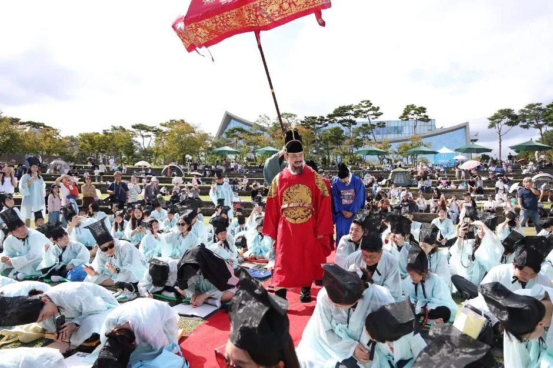
▲ 어좌 앞에서 유생 복장 참가자들이 절을 올리는 재현 행사(2025 세종한글축제). 사진=한국관광공사
축제는 세종호수공원과 세종중앙공원 두 곳에 걸쳐 열리고, 주무대는 세종중앙공원 도시축제마당이다. 보도에 따르면 프로그램은 공연·전시·체험을 합쳐 82종이고, 주최 측은 올해 방문객을 약 33만 명으로 내다본다. 지난해 방문객은 매체에 따라 31만 명 또는 31만 5천 명으로 보도됐다(출처 간 차이). 관람은 무료다.
| 항목 | 내용 |
|---|---|
| 기간 | 2026년 10월 9일(금)~11일(일), 3일간 |
| 장소 | 세종호수공원·세종중앙공원 일원(주무대: 중앙공원 도시축제마당) |
| 운영 시간 | 9~10일 10:00~21:00, 11일 10:00~19:00(보도 기준) |
| 성격 | 한글날 100주년·훈민정음 반포 580주년 기념, 문체부 2026~2027 문화관광축제 선정 |
| 규모 | 프로그램 82종(주요 40종·연계 42종, 보도 기준), 예상 방문객 약 33만 명(주최 측 전망) |
| 관람료 | 무료(한글기차 등 일부 프로그램은 유료) |
| 주최·문의 | 세종시·세종시문화관광재단, 044-850-0592 |
| 내비 목적지 | 세종호수공원: 세종특별자치시 다솜로 216 / 세종중앙공원: 중앙공원로 60(한국관광공사 TourAPI 기준) |
| 공식 누리집 | sjfestival.kr |
ℹ️ 일정 출처 기준
일정은 세종시문화관광재단 축제 누리집과 8월 말~10월 초 보도를 기준으로 했다. 한글런 시각이 한글런 누리집은 "오전 9시 출발", 축제 누리집 프로그램 페이지는 08:00~12:00, 일부 보도는 "오전 8시 개막"으로 다르게 적혀 있다. 출발 순서별 시각은 한글런 누리집에서 확인해야 하고, 참가자가 아니라면 교통통제 시간(아래 표)이 더 중요하다. 통제 시각은 현장 사정으로 바뀔 수 있다.
2. 프로그램 — 한글날 당일에 무엇이 몰리나
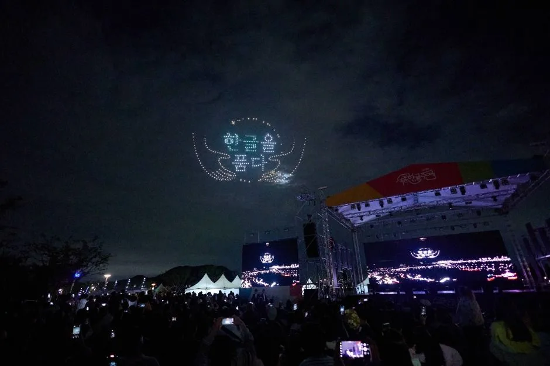
▲ 밤하늘에 "한글을 품다" 문구를 띄운 드론 공연(2025 세종한글축제). 올해는 2,000대 규모로 보도됐다. 사진=한국관광공사
9일 프로그램이 가장 빽빽하다. 오전에 한글런, 낮에 블랙이글스 축하비행, 오후에 한글 노래 경연과 국립정동극장 공연, 밤에 드론공연이 이어진다. 드론은 개막일 20시 40분에 약 2,000대가 한글 창제의 역사를 그린다고 뉴스핌과 다수 보도가 전했고(뉴스핌 원문 "9일 오후 8시 40분"), 지난해 400대의 5배 규모다. 10일에는 태권도·K댄스 공연과 불꽃을 곁들인 연출이 예정돼 있고, 오마이뉴스는 불꽃 장착 드론 600대를 사용한다고 전했다. 11일은 퍼레이드와 국립심포니오케스트라 공연이 중심이다.
| 날짜 | 시간 | 프로그램 | 비고 |
|---|---|---|---|
| 9일(금) | 08:00~12:00(프로그램 페이지) | 2026 한글런(10.9km, 5.15km) | 중앙공원 도시축제마당 출발, 13,000명 모집, 출발 순서별 시각은 한글런 누리집 확인 |
| 9일(금) | 12:00 | 공군 블랙이글스 축하비행 | 공식 FAQ(정오 예정), 기상에 따라 변경 가능 |
| 9일(금) | 16:30 | 한글 노래 경연대회 | 보도 기준 |
| 9일(금) | 10:30~11:50 | 한글런 축하공연(앳하트·션·서도밴드) | 공식 FAQ |
| 9일(금) | 시간 미확인 | 국립정동극장 공연 | 시간표 확인하지 못함 |
| 9일(금) | 20:40 | 한글 드론공연(약 2,000대) | 뉴스핌·세종시민일보 등 보도, 변경 가능 |
| 9~10일 | 13:00~18:00 | 세종거리예술가 콘서트 | 축제 프로그램 페이지 |
| 9~10일 | 16:00~22:00 | 세종 한글 술술 축제(전통주) | 축제 프로그램 페이지 |
| 10일(토) | 시간 미확인 | 태권도·K댄스 공연, 불꽃·드론 연출, 반딧불이 집현전 | 보도 기준 |
| 11일(일) | 13:00~16:00 | 세종 울트라 틴즈 댄스 본선 | 퍼레이드·국립심포니오케스트라 공연은 시간 미확인 |
| 9일~11월 8일 | 전시 | 한글문화특별기획전 〈세종과 남준〉 | 세종중앙공원, 11월 8일까지 |
✅ 블랙이글스 관람 요령
· 9일 12시 비행은 기상 상황에 따라 바뀔 수 있다(FAQ 명시)
· 지난해에는 세종시가 블랙이글스 비행 소음 안내문을 따로 냈다. 올해도 낮 12시 전후에는 공원 안팎이 한꺼번에 붐빌 것으로 보는 편이 안전하다(혼잡 시점은 추정)
· 비행 시간대에는 차 안에서 기다리기보다 먼저 주차하고 공원으로 이동해 두는 쪽이 낫다
3. 자차 접근과 주차 — 14곳, 4,500면
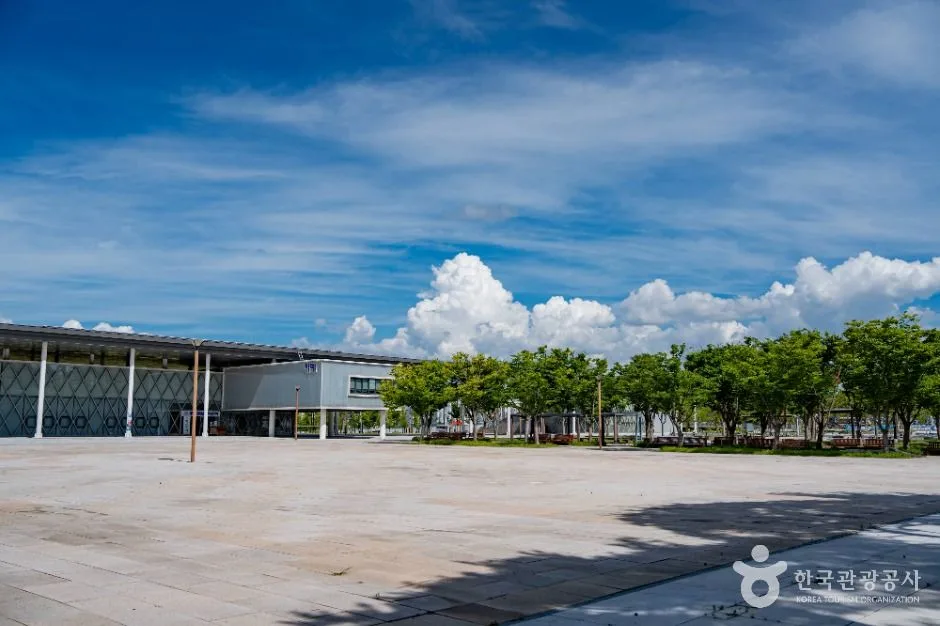
▲ 세종중앙공원의 광장과 박물관 건물(평소 모습). 축제 때는 이 일대에 주무대(도시축제마당)가 들어선다. 사진=한국관광공사
보도에 따르면 주차장은 지난해 8곳(약 2,300면)에서 올해 14곳, 약 4,500면으로 늘었다. 정부세종청사 주차장 5곳도 순차적으로 안내해 수요를 분산하고, 모든 주차장에 안전 인력을 배치한다. 축제장 안에는 개인형 이동장치(PM)와 이륜 자전거 진입이 제한된다. 주차장 이용객을 실어 나르는 셔틀은 없다. 공식 FAQ는 "셔틀버스 미운영"이라 안내하고 "가급적 대중교통과 도보 이동"을 부탁한다. 보도에 나온 버스는 식사 시간대에 축제장과 주변 상권(1km 이내 식당·카페 약 50곳 제휴)을 잇는 상권 연계용이며, 노선과 시간은 확인하지 못했다.
| 항목 | 내용 | 확인 상태 |
|---|---|---|
| 주차장 규모 | 14곳, 약 4,500면(지난해 8곳, 약 2,300면) | 보도 기준(오마이뉴스·뉴스핌) |
| 청사 주차장 | 정부세종청사 주차장 5곳, 순차 안내 | 보도 기준, 개방 시점·요금 미확인 |
| 개별 주차장 위치·면수 | 공식 누리집 "주차 안내" 메뉴에 별도 안내 | 10월 4일 재확인에도 위치별 면수를 확인하지 못함 |
| 주차 요금 | 확인하지 못함 | 방문 전 공식 안내 확인 |
| 셔틀 | 주차장 셔틀 없음(FAQ "셔틀버스 미운영"), 상권 연계 버스만 보도(식당·카페 50곳 제휴) | 상권 연계 노선·시간 미확인 |
| PM·이륜 자전거 | 축제장 내 진입 제한 | 보도 기준 |
| 문의 | 044-850-0591~0594(보도), 044-850-0592(누리집) | 공식 연락처 |
✅ 자차 방문 요령
· 내비는 "세종호수공원" 같은 큰 이름보다 가려는 주차장 이름으로 찍는 편이 낫다. 두 공원이 붙어 있어 공원 이름만 찍으면 정체 구간에 들어갈 수 있다(일반적인 요령)
· 한글날 오전에는 한글런으로 도로가 막히므로 오전 도착이면 통제 시간 전에 진입을 끝낸다
· 정부세종청사 주차장은 순차 안내이므로 현장 안내와 누리집 공지를 확인한다
· 돌아가는 시간은 드론공연 직후(9일 20:40 시작)에 몰릴 가능성이 있다. 공연을 끝까지 볼 계획이면 출차를 늦추거나 일찍 나서는 쪽을 미리 정한다(혼잡 추정)
공식 누리집의 주차 안내 페이지에 주차장 위치·요금·운영 시간·청사 개방 정보가 올라오게 돼 있으나, 10월 4일 기준 이 페이지에서 본문을 텍스트로 확인하지 못했다. 방문 직전에 이 페이지와 세종시 교통현황을 함께 열어 두는 편이 안전하다. 세종시 교통현황 바로가기
| 시간 | 상황 | 자차 요령 |
|---|---|---|
| 08:20 이전 | 한글런 집결, 통제 시작 전 | 이때까지 주차를 끝내거나 한글런 종료 뒤로 도착을 미룬다 |
| 08:20~11:40 | 한글런 교통 제한(FAQ), 10:30~11:50 축하공연 | 중앙공원 방면 진입을 피한다(구간은 미확인) |
| 12:00 전후 | 블랙이글스 축하비행 | 그 전에 이동을 마친다(혼잡 추정) |
| 16:30 | 한글 노래 경연대회 | 오후 입차는 상대적으로 여유가 있을 수 있다(추정) |
| 20:40 | 드론공연(약 2,000대) | 종료 직후 출차 몰림 대비, 공원 운영은 21:00까지 |
▲ 세종중앙공원 가로수길(평소 모습, 축제 사진 아님). 주차장에서 공연장까지 이런 보행로를 걸어 이동하는 구간이 길다. 사진=한국관광공사
4. 교통통제 — 9일 오전 한글런 구간
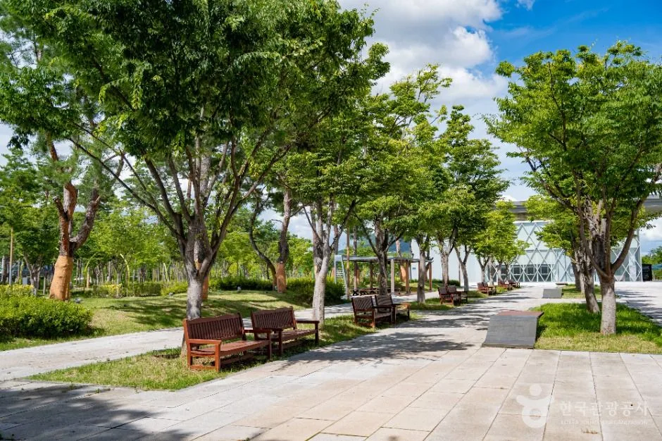
▲ 세종중앙공원 안 산책로(평소 모습). 축제장 안에는 PM·이륜 자전거 진입이 제한된다. 사진=한국관광공사
공식 FAQ에 따르면 9일에는 한글런(10.9km 코스) 때문에 오전 8시 20분부터 11시 40분까지 교통 제한이 있다(통제 시각은 현장 사정에 따라 바뀔 수 있으니 확인). 또 "차 없는 거리"는 개막 전날인 10월 8일 저녁부터 11일까지 운영된다고 FAQ에 적혀 있다. 다만 통제 구간 도로명과 우회로는 이번 조사에서 공식 자료로 확인하지 못했다. 한글런 누리집에도 구간 정보는 없었다.
| 항목 | 내용 | 확인 상태 |
|---|---|---|
| 9일 한글런 통제 | 08:20~11:40, 10.9km 코스 | 공식 FAQ, 변경 가능 |
| 한글런 코스 | 10.9km(한글날), 5.15km(세종대왕 탄신일) | 한글런 누리집 |
| 차 없는 거리 | 10월 8일 저녁~11일 | 공식 FAQ, 구간 미확인 |
| 통제 도로·우회로 | 확인하지 못함 | 세종시 교통정보·누리집 공지 확인 |
| 대중교통 | 대중교통·도보 권장(FAQ) | 노선·증편 정보 미확인 |
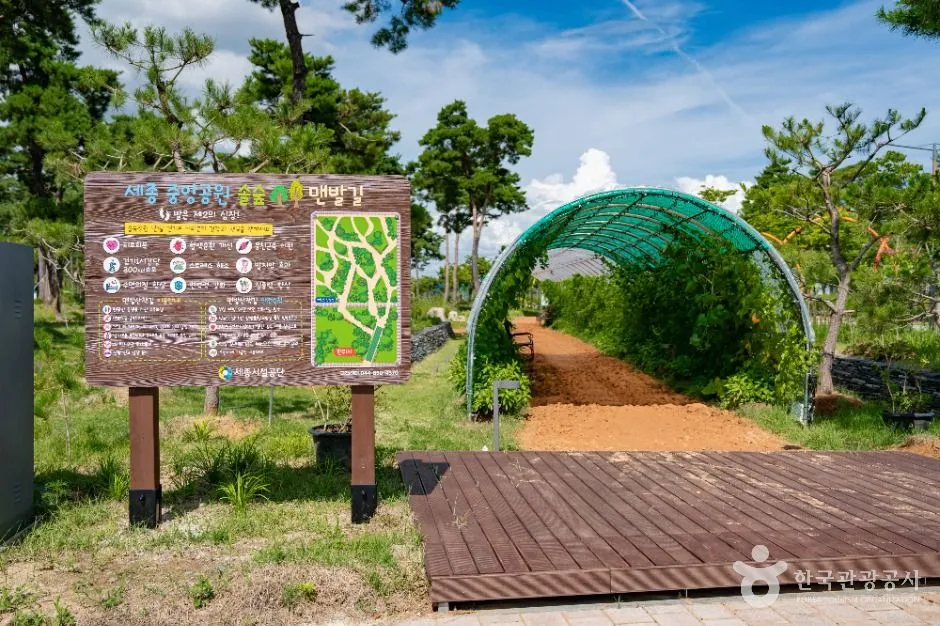
▲ 세종중앙공원 맨발길 입구(평소 모습, 축제 사진 아님). 공연장 밖에서 걸을 수 있는 산책로 중 하나다. 사진=한국관광공사
✅ 날씨·우천 대비
· 블랙이글스 비행은 기상에 따라 변경될 수 있다(FAQ). 우천 시 프로그램별 대체 운영 방침은 확인하지 못했으니 당일 누리집 공지를 본다
· 야외 행사 중심이라 비가 오면 주차장에서 공연장까지 젖은 지면을 걷는 시간이 길어진다. 우산·방수 신발을 챙긴다(일반적인 요령)
· 비 오는 날 대안으로는 국립세종수목원 온실을 고려할 수 있다(아래 7절, 월요일 휴관)
5. 한글날 연휴 혼잡 시간대 — 언제 가야 덜 막힐까
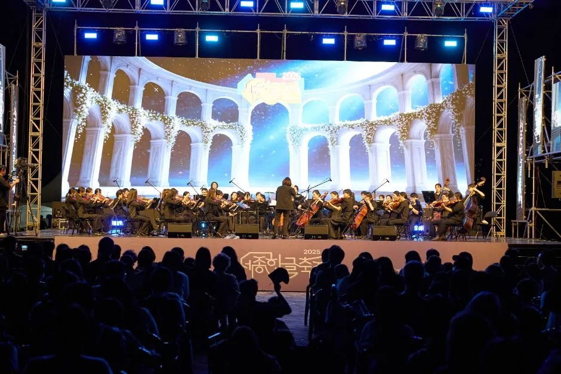
▲ 야외 오케스트라 공연(2025 세종한글축제). 올해 11일에도 국립심포니오케스트라 공연이 예정돼 있다. 사진=한국관광공사
혼잡 시간대를 공식적으로 발표한 곳은 없다. 아래는 확인된 일정에서 추정한 것이다. 방문객은 2024년 약 20만 명에서 지난해 약 31만 5천 명으로 54% 늘었고, 올해 33만 명 전망이 나왔다. 지난해보다 주차장을 크게 늘렸어도 개막일은 한꺼번에 몰릴 수밖에 없다.
| 날짜 | 몰릴 가능성이 큰 시간 | 이유(확인된 일정) | 자차 요령 |
|---|---|---|---|
| 9일(금) | 08~12시, 20~22시 | 한글런 통제, 12시 블랙이글스, 20:40 드론 | 오전 통제 전 진입 또는 한글런 종료 후 도착, 밤은 늦게 출차 |
| 10일(토) | 오후~저녁 | 불꽃·드론 연출, 주말 가족 방문 | 오전 일찍 도착, 저녁 공연은 일찍 주차 |
| 11일(일) | 오후 | 퍼레이드, 오케스트라, 댄스 본선, 폐막(19시) | 폐막 직후 출차 몰림 가능, 일찍 나서기 |
같은 연휴에 다른 지역 행사도 이어진다. 밤 드론 공연을 노린다면 광명동굴 빛 축제 야간 주차 정리도 있다. 서울 쪽은 4대궁 궁중문화축전 주차 정리, 경주 방면은 신라문화제 교통통제·주차 정리, 경기 북부는 포천 한탄강 가든페스타 하루 코스를 함께 비교해 보면 어디가 자차로 감당할 만한지 감이 잡힌다.
6. 먹거리·편의 — 차에서 내린 뒤
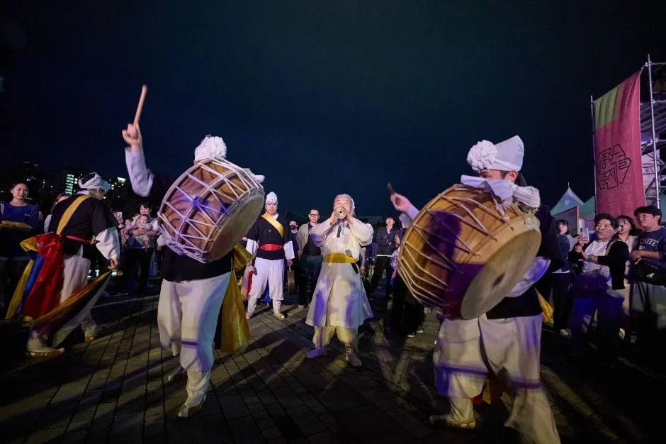
▲ 풍물 공연이 열린 야간 무대(2025 세종한글축제). 사진=한국관광공사
| 항목 | 내용 |
|---|---|
| 푸드트럭 | 37대(보도 기준 지난해 15대에서 증가, 설치 위치별 대수는 확인하지 못함) |
| 한글기차 | 순환기차, 10~19시 운행, 성인 4,000원, 어린이 3,000원(FAQ) |
| 반려동물 | 공원 전체에서 동반 가능, 목줄 2m 이내, 배변 즉시 처리, 맹견은 입마개(FAQ 요약) |
| 대여·시설 | 휠체어·유모차 대여(전동휠체어 대여 신규 운영 보도), 수유실, 안내 부스(FAQ·보도) |
| 숙박 | 신도심 호텔(라고바움, 코트야드 메리어트 등)과 농촌 민박 이용 가능(FAQ), 요금·잔여 객실 미확인 |
| 출연 | 유명 가수 콘서트는 없고, 한글런 축하공연에 앳하트·션·서도밴드 출연(FAQ 요약) |
축제 누리집에서는 프로그램과 주차 안내를 볼 수 있다. 세종한글축제 공식 누리집 바로가기
7. 연계 코스 — 세종호수공원·국립세종수목원
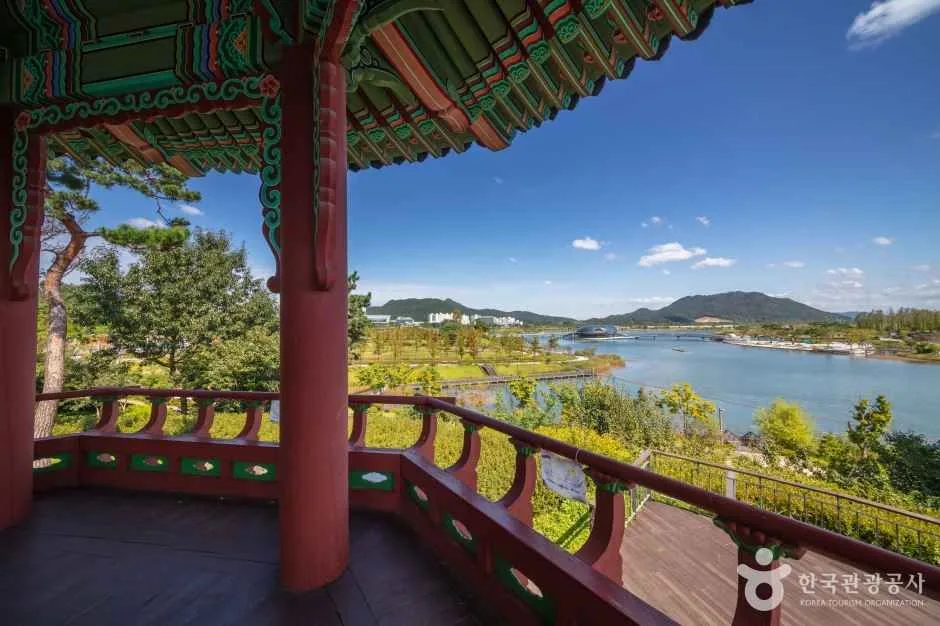
▲ 세종호수공원 정자에서 본 호수 전경. 축제장과 이어진 산책 코스다. 사진=한국관광공사
세종호수공원은 축제장 자체라 따로 이동할 필요가 없다. 축제 인파를 피해 걷고 싶다면 오전에 호수 가장자리를 먼저 돌고, 오후에 공연장으로 들어가는 식으로 짜는 방법이 있다. 차로 이동해 하루를 늘린다면 국립세종수목원이 가장 무난하다. 한국관광공사 자료상 주소는 세종특별자치시 수목원로 136이다. 검색 결과 기준 관람 시간은 하절기(3~10월) 09:00~18:00(입장 마감 17:00), 매주 월요일 휴관, 입장료는 성인 5,000원·청소년 4,000원·어린이 3,000원이다. 주차 요금은 확인하지 못했다.
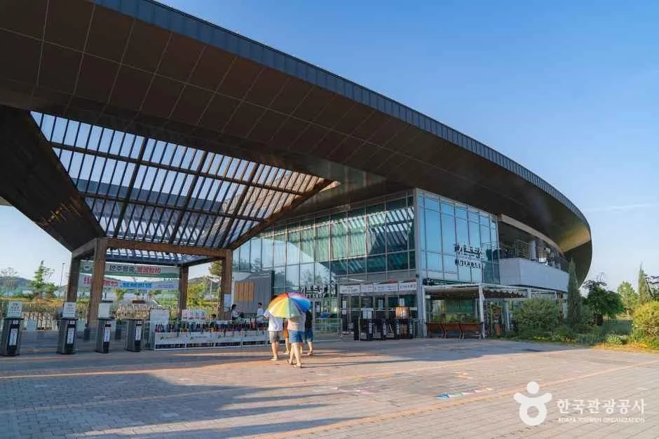
▲ 국립세종수목원 입구 건물. 월요일(12일)은 휴관이므로 연휴 마지막 날인 11일까지 방문하는 편이 낫다. 사진=한국관광공사
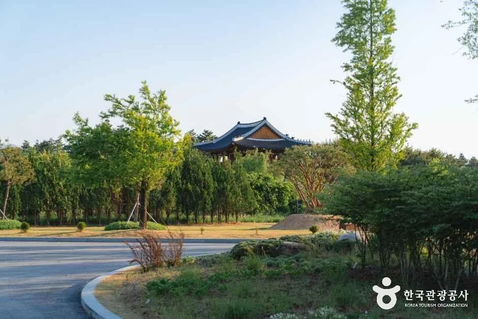
▲ 수목원 한국전통정원 일대. 사진=한국관광공사
▲ 호수공원 물가의 억새와 산책로. 사진=한국관광공사
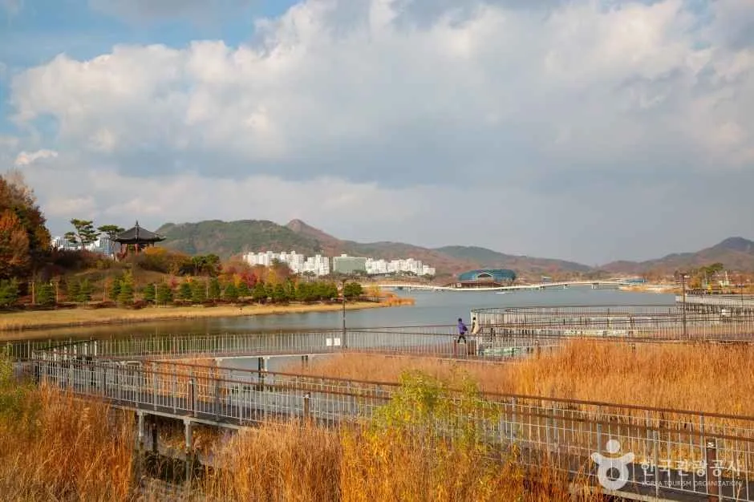
▲ 세종호수공원 수변 데크길(가을 일반 풍경, 축제 사진 아님). 사진=한국관광공사
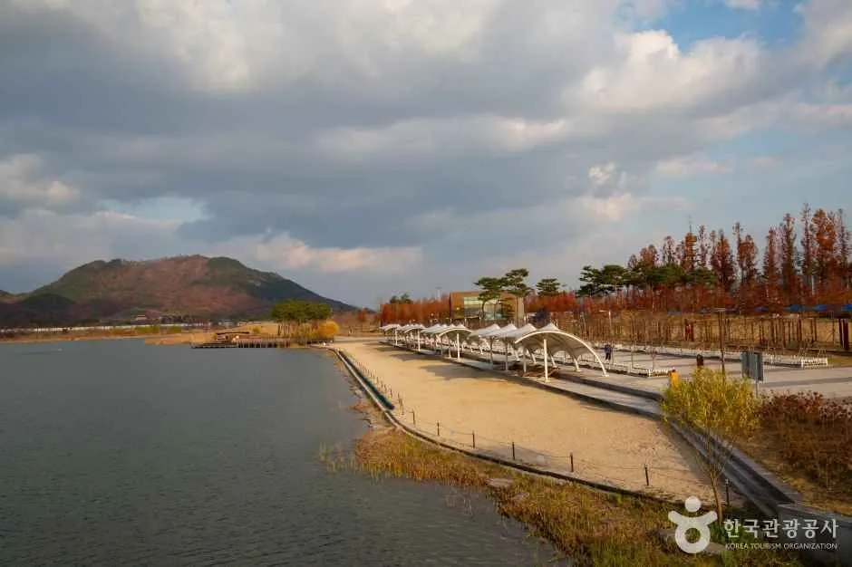
▲ 세종호수공원 물가 산책로(가을 일반 풍경, 축제 사진 아님). 사진=한국관광공사
| 장소 | 내비 주소(TourAPI) | 메모 |
|---|---|---|
| 세종호수공원 | 세종특별자치시 다솜로 216 | 축제장 일부, 산책 코스 |
| 세종중앙공원 | 세종특별자치시 중앙공원로 60 | 주무대, 〈세종과 남준〉 전시 |
| 국립세종수목원 | 세종특별자치시 수목원로 136 | 월요일 휴관, 입장료 성인 5,000원(검색 기준), 주차 요금 미확인 |
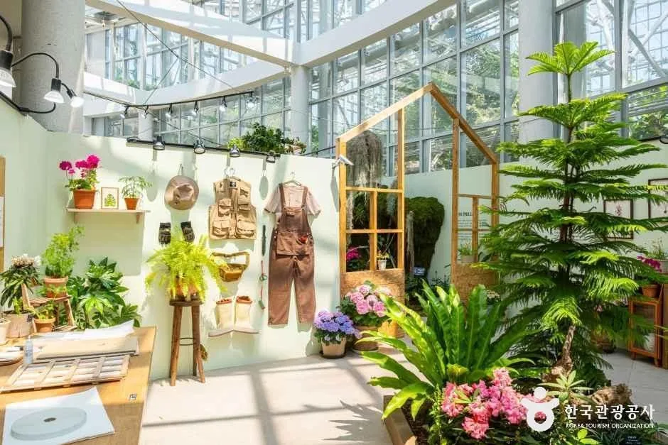
▲ 수목원 온실 내부 전시 공간. 날씨가 좋지 않을 때 대안이 된다. 사진=한국관광공사
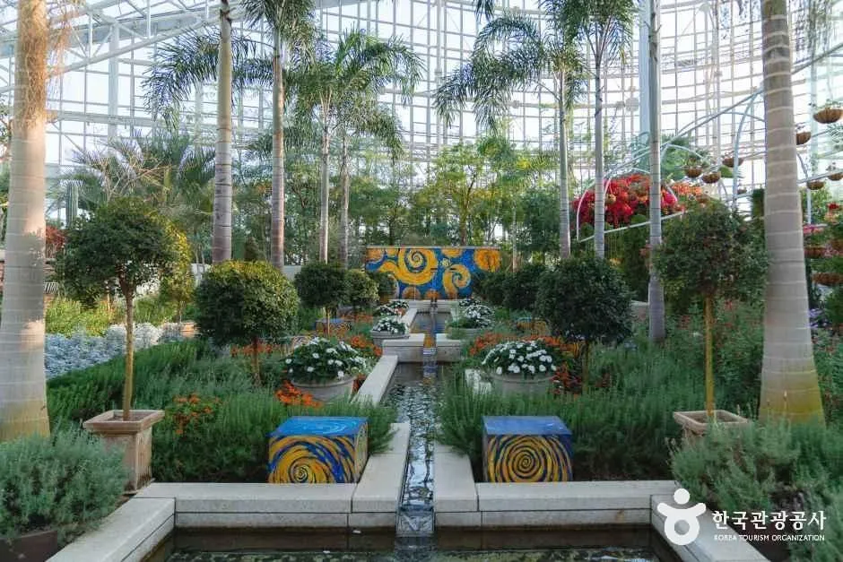
▲ 국립세종수목원 온실 내부 정원(일반 풍경). 우천 시 대안으로 고려할 수 있다. 사진=한국관광공사
✅ 출발 전 체크리스트
· 기간: 10/9(금)~11(일), 9~10일 10~21시, 11일 10~19시
· 9일: 한글런 교통 제한 08:20~11:40, 블랙이글스 12:00(기상 변동), 드론 20:40
· 주차: 14곳 약 4,500면, 정부세종청사 5곳 순차 안내, 위치별 면수·요금은 누리집에서 확인
· 내비: 호수공원 다솜로 216, 중앙공원 중앙공원로 60
· 수목원: 월요일(12일) 휴관
· 문의: 044-850-0592
8. 요약
2026 세종한글축제는 10월 9~11일 세종호수공원·세종중앙공원에서 열리며, 한글날인 9일에 한글런(오전), 블랙이글스 축하비행(12시), 드론공연(20시 40분)이 몰린다. 주차장은 지난해 8곳에서 14곳, 약 4,500면으로 늘었고 정부세종청사 주차장 5곳도 순차 안내된다.
9일 08:20~11:40에는 한글런으로 교통 제한이 있고, 10월 8일 저녁부터 11일까지 "차 없는 거리"가 운영된다고 안내됐다. 자차는 통제 전 진입하거나 오후에 도착하고, 드론공연 뒤 출차 혼잡에 대비하자. 개별 주차장 위치·면수·요금, 청사 주차장 개방 시점, 상권 연계 버스 노선·시간, 통제 도로와 우회로, 일부 프로그램 시간표는 확인하지 못했으므로 출발 전 공식 누리집과 재단(044-850-0592)에서 확인해야 한다.